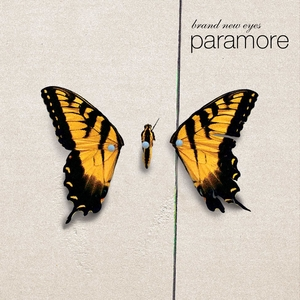
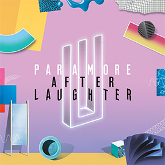

Discografía
All We Know Is Falling
Paramore viajó de regreso a Orlando, Florida, pero poco después de llegar, Jeremy Davis dejó la banda por motivos personales. Los cuatro miembros restantes de Paramore continuaron con el álbum, escribieron "All We Know" sobre su partida y luego decidieron basar All We Know is Falling en torno al concepto. La carátula del álbum también reflejó el dolor de Paramore como explica Hayley Williams: "El sofá en la portada de All We Know is Falling sin nadie allí y la sombra alejándose; todo se trata de Jeremy dejándonos y sintiendo que hay un espacio vacío". La grabación tomó tres semanas y el material promocional del álbum solo presentaba a los cuatro miembros restantes. Antes de la gira, la banda agregó a John Hembree (bajo) a su formación para reemplazar a Jeremy Davis. Durante ese verano, Paramore apareció en el escenario Shira Girl del Warped Tour 2005. Después de que la banda se lo pidiera, Jeremy Davis regresó a Paramore después de cinco meses de diferencia, reemplazando a Hembree. All We Know is Falling fue lanzado el 24 de julio de 2005 y alcanzó el puesto 30 en la lista Heatseekers de Billboard. Paramore lanzó "Pressure" como su primer sencillo, con un video dirigido por Shane Drake, pero la canción no logró ubicarse en las listas. El video presentaba a la banda tocando en un almacén, y eventualmente siendo rociados con rociadores de agua mientras ocurre la historia de una pareja en conflicto. En julio, se lanzó "Emergency" como segundo sencillo, el video reuniendo nuevamente a la banda con el director Shane Drake y presentando a Hunter Lamb (guitarra rítmica), quien reemplazó a Jason Bynum. El video de "Emergency" mostró a Paramore en otra actuación, esta vez arreglando los disfraces ensangrentados de los miembros. El tercer sencillo, "All We Know", se lanzó con tiempo de transmisión limitado, y el video consta de una colección de presentaciones en vivo y metraje entre bastidores. La primera gira principal de Paramore en los Estados Unidos comenzó el 2 de agosto de 2006, con una audiencia agotada con el apoyo de This Providence, Cute Is What We Aim For y Hit the Lights con el espectáculo final en Nashville. Ese año fueron votados como "Mejor banda nueva" y Hayley Williams fue votada como la "Mujer más sexy" número 2, por los lectores de la revista británica Kerrang. En 2007, Hunter Lamb dejó el grupo para casarse y Paramore continuó como cuarteto. Luego, Paramore fue nombrada por la revista británica NME como una de las diez bandas a tener en cuenta en su función "New Noise 2007". En enero, la banda tocó un set acústico para la gran inauguración de una exhibición del Warped Tour en el Salón de la Fama del Rock and Roll, y el vestido que Hayley Williams usó en el video de "Emergency" también se exhibió en la exhibición.

Lista de canciones
- All We Know
- Pressure
- Emergency
- Brighter
- Here We Go Again
- Never Let This Go
- Whoa
- Conspiracy
- Franklin
- My Heart
Riot!
Paramore comenzó a grabar su segundo álbum, Riot! en enero de 2007, finalizando la producción en marzo sin el guitarrista rítmico Hunter Lamb (quien dejó la banda a principios de 2007 después de casarse); sin Lamb, se requirió que el guitarrista principal Josh Farro tocara ambas partes de guitarra en el álbum. Taylor York, que había estado en una banda con los hermanos Farro antes de que ambos conocieran a Hayley Williams, se unió como reemplazo de Lamb. Después de ser cortejada por los productores Neal Avron y Howard Benson, Paramore optó por grabar Riot! con el productor de Nueva Jersey David Bendeth, lanzando el álbum el 12 de junio de 2007. Riot! ingresó al Billboard 200 en el número 20, las listas del Reino Unido en el número 24 y vendió 44,000 en su primera semana en los Estados Unidos. ¡El nombre Riot! había sido elegido porque significaba "un estallido repentino de emoción incontrolada", y era una palabra que "lo resumía todo". El primer sencillo del álbum, lanzado el 21 de junio de 2007, "Misery Business", es, según Williams, "más honesto que cualquier cosa que haya escrito, y los chicos igualaron esa emoción musicalmente". En el verano de 2007, Paramore participó en su tercer Warped Tour y publicó diarios de sus experiencias en yourhereblog para MTV. En junio fueron declarados por Rolling Stone como "Ones to Watch". Paramore hizo su debut televisivo en vivo en el programa diario de Fuse Networks, The Sauce. El segundo sencillo de Riot!, "Hallelujah", fue lanzado el 30 de julio de 2007 y solo está disponible en línea y en la televisión del Reino Unido. El video, al igual que "All We Know", presenta imágenes detrás del escenario y presentaciones en vivo. El 11 de octubre de 2007, el video musical de "Crushcrushcrush" debutó en la televisión de los Estados Unidos como el próximo sencillo de Riot. El video de "Crushcrushcrush" presentaba a la banda tocando en un desierto árido, siendo espiada y luego destruyendo su equipo. El sencillo fue lanzado en los Estados Unidos el 19 de noviembre y estuvo disponible en el Reino Unido el 12 de noviembre de 2007. Hayley Williams grabó voces invitadas para las pistas "The Church Channel" y "Plea" para el álbum conceptual Say Anything In Defense of the Genre se lanzó el 23 de octubre de 2007. El grupo actuó en vivo en estilo acústico en Boston el 29 de noviembre de 2007 para la radio FNX. El 31 de diciembre de 2007, Paramore actuó en el programa de Nochevieja de MTV que se desarrolló desde las 11:30 p.m. a la 1:00 am Paramore apareció en la portada de la edición de febrero de 2008 de la revista Alternative Press y los lectores la votaron como "Mejor banda de 2007". La banda fue nominada a "Mejor Artista Nuevo" en la 50ª Entrega Anual de los Premios Grammy presentada el 10 de febrero de 2008, pero perdió ante Amy Winehouse. A principios de 2008, Paramore realizó una gira por el Reino Unido, promocionando su álbum Riot!, junto con New Found Glory, Kids in Glass Houses y Conditions. A principios de febrero de 2008, la banda comenzó una gira por Europa, sin embargo, el 21 de febrero de 2008, la banda anunció que había cancelado seis presentaciones debido a problemas personales. La banda, sin embargo, regresó a su ciudad natal para grabar el video musical del cuarto sencillo "That's What You Get", que luego fue lanzado el 24 de marzo de 2008. El 19 de mayo de 2008, Paramore anunció en su sitio web que volverían a salir de gira, la gira se llamaría "The Final Riot!", Comenzando el 25 de julio y terminando el 1 de septiembre. En esta gira, la banda interpretó parte de Leonard Cohen. "Aleluya". El 2 de septiembre de 2008, Paramore lanzó una sudadera con capucha de colaboración junto con Hurley Clothing basada en el álbum Riot!. Todos los ingresos se destinaron a la fundación Love146. La canción de Paramore "Decode" fue el sencillo principal de la película Crepúsculo basada en una novela. Otra canción llamada "I Caught Myself" también aparece en la banda sonora de la película. "Decode" se lanzó el 1 de octubre de 2008 en el sitio web de Paramore Fan Club y en el sitio web de Stephenie Meyer. La banda comenzó a filmar el video el 13 de octubre y se estrenó el 3 de noviembre. Hot Topic organizó fiestas de escucha de la banda sonora el 24 de octubre de 2008 y el álbum se lanzó el 4 de noviembre de 2008. Borders lanzó una versión exclusiva de la banda sonora que presenta una versión acústica de "Decode". ¡La banda lanzó un álbum en vivo llamado The Final Riot! el 25 de noviembre de 2008. El álbum incluye un DVD adicional con un concierto completo grabado en Chicago, así como un documental detrás de escena. A partir del 9 de abril de 2009, The Final Riot! es oro certificado en los Estados Unidos.

- For a Pessimist, I'm Pretty Optimistic
- That's What You Get
- Hallelujah
- Misery Business
- When It Rains
- Let The Flames Begin
- Miracle
- crushcrushcrush
- We Are Broken
- Fences
- Born For This
Brand New Eyes
En enero de 2009, Josh Farro habló sobre el próximo tercer álbum de estudio de la banda. Hablando con Kerrang!, Farro dijo: "Vamos a intentar [grabarlo] en Nashville. Creo que escribir el álbum allí nos inspirará, y luego, si grabamos allí también, será mucho más fácil ya que podemos dormir". ¡En nuestras camas por la noche en lugar de en hoteles como los otros 300 días del año! Todavía no estamos seguros de quién va a producir el disco. Hicimos 'Decode' con [el productor] Rob Cavallo, que fue una buena experiencia. pero estamos mirando alrededor y no queremos tomar ninguna decisión hasta que tengamos muchas canciones y sepamos lo que estamos buscando. Realmente disfrutamos nuestro sonido en vivo y queremos un productor que realmente pueda capturar eso". El 21 de enero de 2009, se anunció que Paramore será el invitado especial con Bedouin Soundclash, The Sounds y Janelle Monae en la gira de verano No Doubt 2009, que comenzará en mayo de 2009 en anfiteatros y estadios al aire libre en Estados Unidos y Canadá. Paramore escribió y completó su disco más reciente, Brand New Eyes, a principios de 2009. El primer sencillo de Brand New Eyes se titula "Ignorance" y se lanzó el 7 de julio de 2009. El video musical oficial de "Ignorance" se emitió en todas las plataformas, cadenas y canales de MTV. y sitios web el 13 de agosto de 2009. Paramore anunció en su sitio oficial que llegarán a lugares íntimos en todo Estados Unidos. La gira comenzó el 29 de septiembre (el día en que se lanzó Brand New Eyes) y finalizó el 1 de noviembre en su ciudad natal. La banda también anunció que harían una gira europea que comenzaría en Helsinki, Finlandia, el 29 de noviembre de 2009, con You Me at Six, Paper Route y Now, Now, Every Children apoyando todas las fechas de la gira por el Reino Unido.
Lista de canciones
- Careful
- Ignorance
- Playing God
- Brick By Boring Brick
- Turn It Off
- The Only Exception
- Feeling Sorry
- Looking Up
- Where The Lines Overlap
- Misguided Ghosts
- All I Wanted
Paramore
El 9 de junio de 2011, Hayley Williams anunció que la banda está comenzando a escribir su cuarto álbum, que esperan comenzar a grabar a finales de año, esperando un lanzamiento a principios de 2012. El 5 de septiembre de 2011, Hayley Williams tiene confirmó que la banda se prepara para lanzar otra nueva canción, titulada "Renegade", la cual fue grabada en las mismas sesiones que el último sencillo de la banda, "Monster", que tuvo lugar en marzo pasado con el productor Rob Cavallo. La canción es la primera de tres canciones que quedan por lanzar de estas sesiones, excepto "Monster". El 11 de octubre de 2011, Paramore anunció que lanzará tres nuevos sencillos durante los próximos tres meses hasta finales de 2011, con un sencillo por mes. La banda ha establecido el "Club de solteros" en su sitio web, lo que brinda a los fanáticos la oportunidad de comprar los nuevos sencillos cuando se lanzan, ya que se lanzan exclusivamente a través del Club de solteros y no se venderán en iTunes ni en las tiendas. Una canción llamada "Renegade" se estrenó el día del anuncio, seguida de "Hello Cold World" el 7 de noviembre y "In the Mourning" el 5 de diciembre. El 29 de enero, a través de una publicación de blog en Paramore.net, la banda anunció que se dirigirían a Los Ángeles la semana siguiente para reunirse con los posibles productores del próximo cuarto álbum, expresando su entusiasmo por comenzar el ciclo del álbum nuevamente. Más tarde se confirmó que Paramore trabajará con Justin Meldal-Johnsen en su cuarto álbum de estudio, que comenzará a grabar a finales de mayo. Más tarde anunciaron que el título de su cuarto álbum sería Paramore, que se lanzaría el 8 de abril de 2013, y el primer sencillo se titula "Now", y se lanzó el 22 de enero de 2013. Más tarde lanzaron una letra de la canción. primer sencillo "si hay futuro, lo queremos ya". El 18 de abril de 2012, Williams anunció en el sitio web de la banda que el productor de su nuevo álbum sería Meldal-Johnsen. El 2 de julio de 2012, se anunció en el feed de Twitter de la banda que los antiguos Lostprophets y los actuales Angels & Airwaves y Nine Inch Nails el baterista Ilan Rubin grabará la batería para el próximo cuarto álbum de estudio de la banda. El 6 de diciembre de 2012, Paramore anunció su cuarto álbum homónimo. El cuarto álbum homónimo se lanzó el 9 de abril de 2013. El primer sencillo del álbum, titulado "Now", se lanzó en línea el 22 de enero de 2013. El álbum había incluido muchos otros sencillos, como Still Into You. Still Into You fue una de las canciones estadounidenses más exitosas de Paramore. La canción había alcanzado el número 1 en la lista de rock del Reino Unido y el número 6 en la lista de rock de EE. UU. La canción fue clasificada como pop y rock, por lo que ganó popularidad en diferentes listas de éxitos en todo el mundo. Esta canción había sido una de las únicas canciones pop de Paramore, ya que se decía que "Now" era una canción de rock. Paramore también había creado otro EP, aunque solo se hicieron 700 copias. El EP se llamó "The Holiday Sessions", y las copias se entregaron en su ciudad natal, Nashville, Tennessee. Esto se dio a conocer el 20 de abril de 2013 (unas semanas después del lanzamiento del video musical 'Still Into You'), durante el Día Nacional del Disco. Este EP incluía tres canciones del álbum, que eran Interlude: Moving On, Interlude: Holiday e Interlude: I'm Not Angry Anymore. El siguiente sencillo después de Still Into You fue 'Daydreaming'. Se suponía que el video musical de Daydreaming no saldría al aire hasta después de la canción Ain't It Fun... pero a la banda no le gustó hacia dónde se dirigía el video, y llegaron a la conclusión de desecharlo. Mientras estaban de gira, se lanzó un video rápido de Daydreaming, con la banda en su habitación antes de su actuación y la banda tocando durante la actuación. Daydreaming se había ganado el puesto 33 en la lista de rock del Reino Unido. 'Ain't It Fun' se había lanzado 2 meses después de Daydreaming. Había presentado a la banda batiendo 10 récords mundiales, uno de ellos basado en tener la mayor cantidad de récords en un video musical. El video originalmente se había hecho el 2 de diciembre, pero no se emitió hasta hace más de un mes y medio. 'Ain't It Fun' alcanzó el puesto número 3 en UK Rock y el puesto 19 en US rock. Durante el Día Nacional del Disco en 2014, Paramore entregará un vinilo oficial que incluirá la canción 'Ain't It Fun'. El diseño del vinilo es un 'disco rayado', en lugar de una flor.
Lista de canciones
- Fast in My Car
- Now
- Grow Up
- Daydreaming
- Interlude: Moving On
- Ain't It Fun
- Part II
- Last Hope
- Still Into You
- Anklebiters
- Interlude: Holiday
- Proof
- Hate To See Your Heart Break
- (One Of Those) Crazy Girls
- Interlude: I'm Not Angry Anymore
- Be Alone
- Future
After Laughter
El 19 de enero de 2016, Williams anunció en Twitter que la banda estaba en proceso de escribir su quinto álbum. El 8 de junio de 2016, la banda publicó un video corto de ellos mismos en un estudio en sus redes sociales. Esto fue precedido por una serie de imágenes que incluían tanto al ex baterista Zac Farro como al productor Justin Meldal-Johnsen, los principales fanáticos y varios medios de comunicación especularon que Farro regresaría a Paramore. El 17 de junio, Farro apareció una vez más en una imagen subida a las redes sociales, esta vez detrás de una batería, confirmando que grabaría la batería para el álbum, aunque afirmó que solo estaba grabando la batería para el álbum y no se había reincorporado. como miembro de pleno derecho. Más tarde, el 2 de febrero de 2017, a pesar de sus afirmaciones, Paramore hizo un anuncio en Facebook, Twitter e Instagram confirmando el regreso a tiempo completo de Zac Farro a la banda, convirtiendo oficialmente a Paramore en un trío nuevamente. El 19 de abril de 2017, Paramore lanzó un nuevo sencillo titulado 'Hard Times', anunció el título de su nuevo álbum como 'After Laughter' y la fecha de lanzamiento sería el 12 de mayo de 2017. Paramore dejó de hacer giras en 2018 por motivos personales y anunció que ya no interpretarán la canción favorita de los fanáticos "Misery Business". El 8 de mayo de 2020, Hayley Williams lanzó su primer álbum en solitario "Petals for Armor".
Lista de canciones
- Hard Times
- Rose-Colored Boy
- Told You So
- Forgiveness
- Fake Happy
- 26
- Pool
- Grudges
- Caught in the Middle
- Idle Worship
- No Friend
- Tell Me How
This is Why y actualidad
Hayley anunció que después de que su álbum en solitario esté terminado y lanzado, ella y el resto de la banda comenzarán a trabajar en su sexto álbum; se especuló que podría volver a sus rutas rock/pop-punk, pero Hayley lo negó alegando que ella nunca dijo eso, y que [la banda] nunca se etiquetó a sí misma como "pop-punk", lo que hizo que los fanáticos consideraran ' Paramore' un género musical oficial. A partir de 2022, la banda ha anunciado que están oficialmente de vuelta en el estudio, grabando su tan esperado sexto álbum. “Escribimos y rastreamos algo que amamos y realmente nos sorprendió”, le dice Williams a Rolling Stone[2] en un correo electrónico. “Seguimos bromeando, todo fue cuesta abajo desde ese punto, pero gracias a Dios nos hemos sorprendido mucho a lo largo de todo este asunto. Siempre estoy esperando el momento para que sepamos que estamos en algo nuevo y que no estamos repitiendo la misma mierda. Fue 'Ain't It Fun' para nuestro disco homónimo, y 'Hard Times' o 'Told You So' para After Laughter. No se trata tanto de que se sienta como un éxito sino de una sensación aterradora y emocionante de que estás pisando aguas desconocidas. Te mantiene curioso. Llegamos a sentir ese sentimiento desde el principio esta vez”. Williams también se burló de una posible colaboración con SZA en la misma entrevista. En marzo de 2022 se cumplieron 20 años desde que Hayley, Zac y Taylor se conocieron y se hicieron amigos.

Lista de canciones
- This is Why
- The News
- Running Out of Time
- C'est Comme Ça
- Big Man, Little Dignity
- You First
- Figure 8
- Liar
- Crave
- Thick Skul